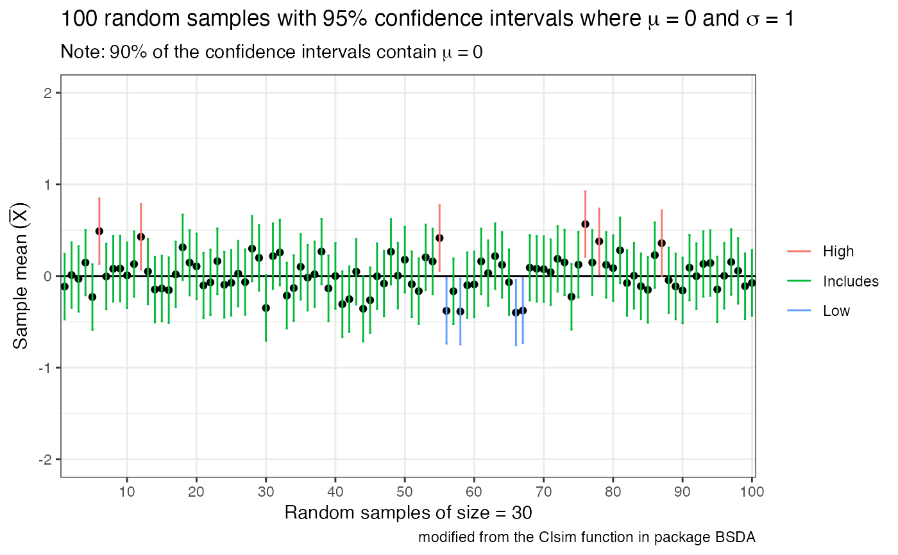
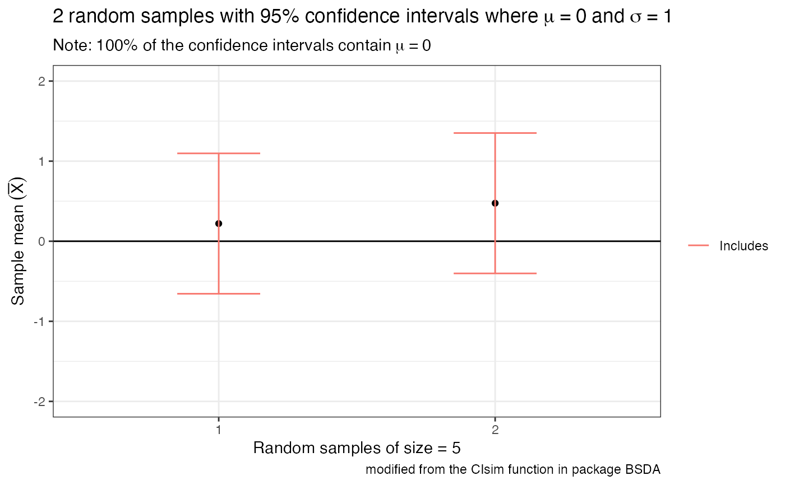
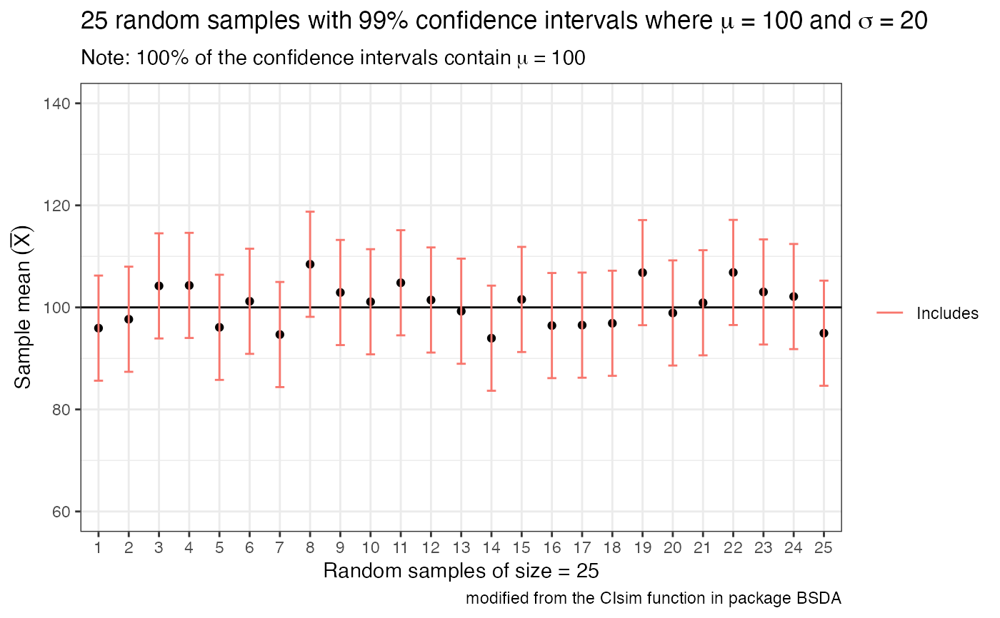

R/OurConfidence.R
OurConf.RdThis function takes some parameters and simulates random samples and their confidence intervals
OurConf(samples = 100, n = 30, mu = 0, sigma = 1, conf.level = 0.95)
| samples | The number of times to draw random samples |
|---|---|
| n | The sample size we draw each time |
| mu | The population mean mu |
| sigma | The population standard deviation |
| conf.level | What confidence level to compute 1 - alpha (significance level) |
A ggplot2 object
OurConf(samples = 100, n = 30, mu = 0, sigma = 1, conf.level = 0.95)#> 98 % of the confidence intervals contain Mu = 0 .OurConf(samples = 2, n =5)#> 100 % of the confidence intervals contain Mu = 0 .OurConf(samples = 25, n = 25, mu = 100, sigma = 20, conf.level = 0.99)#> 100 % of the confidence intervals contain Mu = 100 .